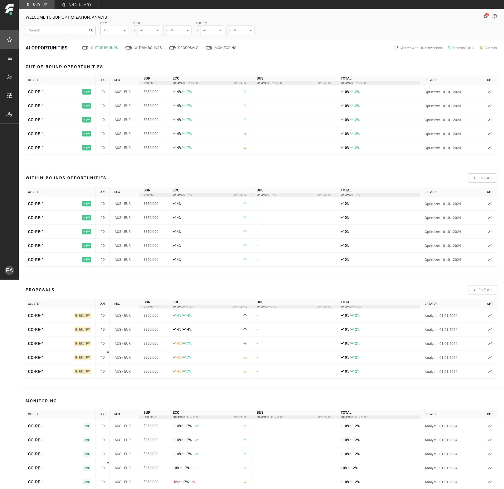

01.1/AI opportunities
Identifying and prioritizing opportunities
The analyst's day starts on one ranked list, not a spreadsheet export: clusters the model has flagged, split into Out-of-Bounds, Within-Bounds, Proposals, and Monitoring - each independently toggled on or off. A confidence arrow sits next to every number, so priority reads at a glance instead of requiring a scan of raw figures.